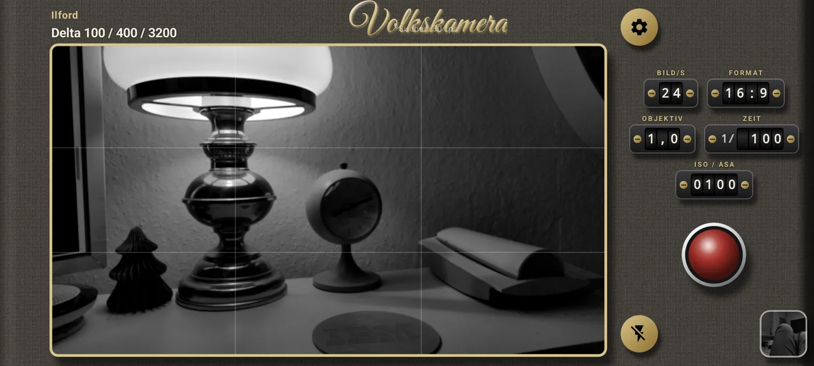
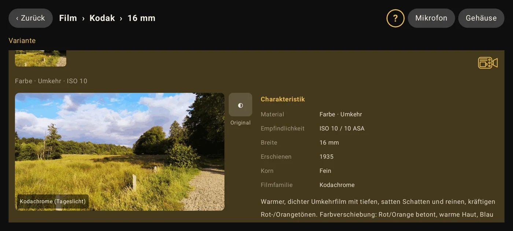
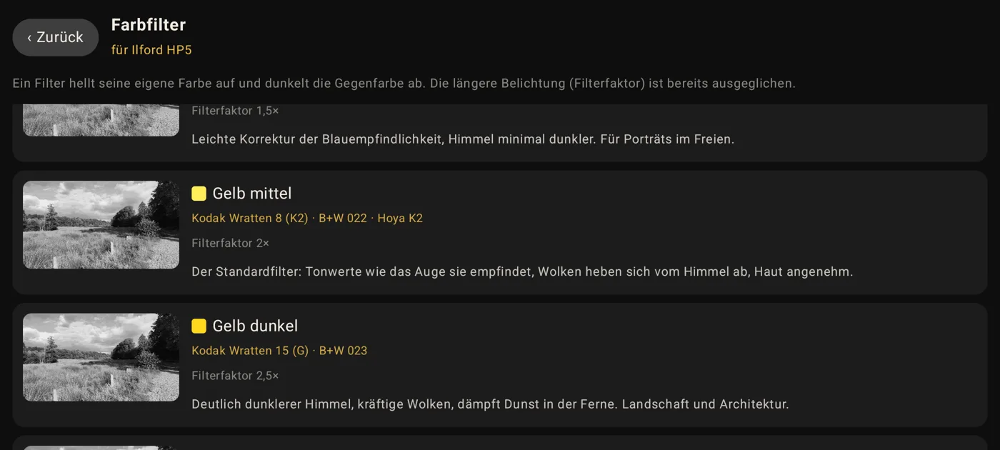
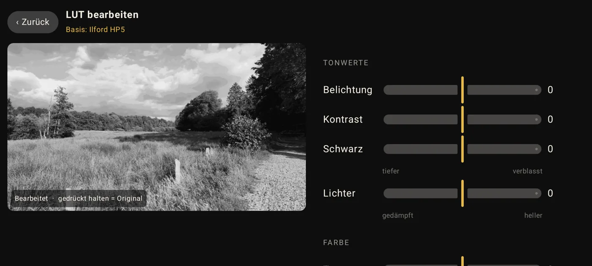
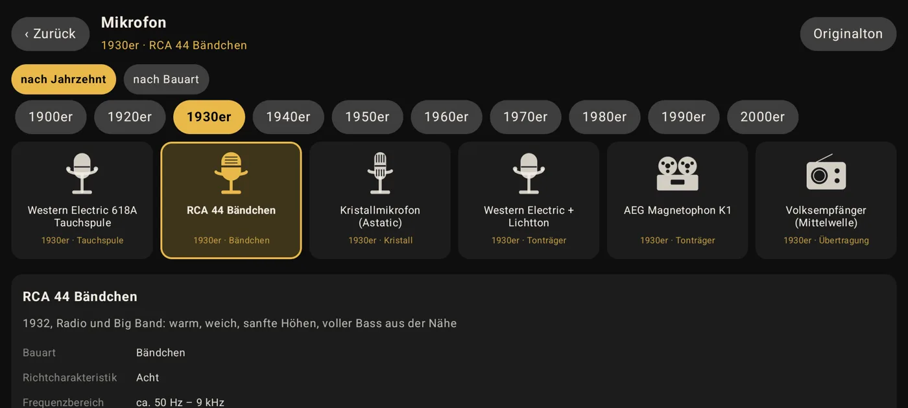
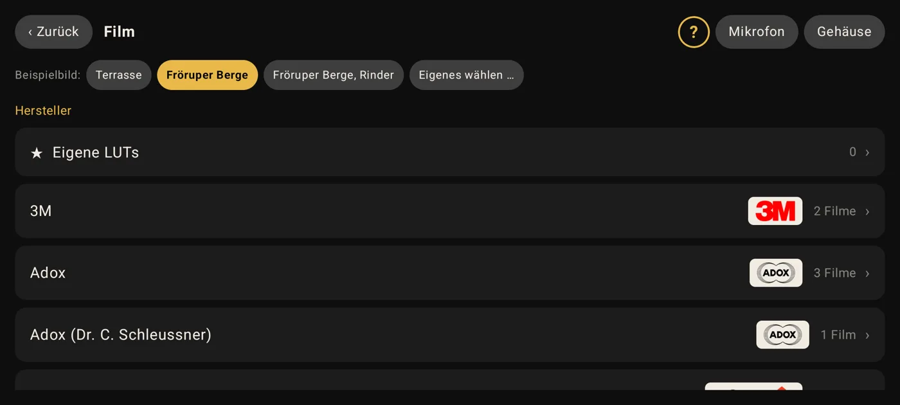
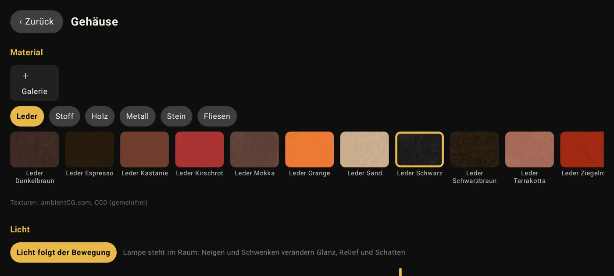

Что это
Volkskamera снимает как аналоговая кинокамера. Вы выбираете настоящую плёнку – от ортохроматической киноплёнки 1890-х через Kodachrome и Agfacolor до современной обращаемой – и снимаете с её цветами, контрастом и зерном. Как у настоящей камеры, у каждой плёнки фиксированная светочувствительность; яркость регулируется выдержкой.
от 26 производителей в 8, 16 и 35 мм – у каждой карточка, пример изображения и источники.
жёлтый, оранжевый, красный, зелёный, синий – с обозначениями Kodak Wratten, B+W и Hoya.
Фиксированная светочувствительность плёнки, выдержки от 1/5 до 1/5000 – без автоматики.
Измеряет, как телефон изменяет изображение, и компенсирует это перед каждой плёнкой.
от фонографа Эдисона до видеокамеры, плюс шум, треск и гул.
Сохраняйте плёнку, фильтр и звук и передавайте их коротким текстом.
Настройте любую плёнку и сохраните свою версию.
127 материалов со светом, который следует за наклоном и поворотом; своя надпись, четыре значка.
Как это выглядит
На снимках показан немецкий интерфейс; приложение полностью доступно на русском.







Конфиденциальность
У Volkskamera нет доступа к интернету. Технически она ничего не может отправить: ни рекламы, ни слежки, ни учётных записей, ни облака, ни аналитики. Ваши записи остаются на устройстве. Приложение запрашивает только камеру и микрофон – для съёмки.
Этот сайт тоже не использует cookies, ничего не загружает со сторонних серверов (ни шрифтов, ни скриптов, ни статистики) и работает без JavaScript.
Исходный код открыт – каждый может проверить, что делает приложение: github.com/veritasX1/VolksKamera
Скачивайте только здесь
Volkskamera бесплатна и не содержит платных функций. Никаких «премиум», «про» или «мод»-версий нет. Предложения на других сайтах или в сторонних магазинах приложений – не наши и могут быть изменены. Официальные источники – только volkskamera.goip.de и релизы на GitHub. При сомнениях сверьте контрольную сумму SHA-256 выше.
Установка
- Скачайте APK на телефон.
- Откройте его и один раз разрешите установку из этого источника.
- При первом запуске разрешите доступ к камере и микрофону – готово.
Если вы устанавливали раннюю тестовую версию, один раз удалите её. Все языковые версии – одно и то же приложение, отличается только язык при запуске.
Через F-Droid
С приложением F-Droid все обновления приходят автоматически. Добавьте один раз мой репозиторий – в нём также есть мои приложения Schmalfilm и RetroCam (ранняя тестовая версия).
Добавить репозиторий в F-Droid
На компьютере? Отсканируйте код телефоном:
Вручную: адрес: https://volkskamera.goip.de/fdroid/repo
Отпечаток: 8DA9DEF44C65856A1B098DB7BF876D48514997EF17C7256E23E91EAC6C486500
Версия из F-Droid запускается на языке телефона. Она подписана тем же ключом, что и APK здесь, – можно переходить в любой момент, настройки сохраняются.
Лицензия
Volkskamera можно свободно использовать – в личных и профессиональных целях. Всё, что вы с её помощью снимаете, принадлежит вам, в том числе для коммерческого использования. Запрещено продавать приложение или его части, встраивать платные пакеты, подписки или рекламу, а также распространять его через другие сайты. Полная лицензия (на немецком, с кратким изложением на английском)
Источники и права
- Характер плёнок: рассчитан нами по техническим паспортам производителей (Eastman Kodak, Fujifilm, Ilford/Harman, Foma, Agfa/Agfa-Gevaert, ADOX, ORWO, CineStill, Lomography и др.) и по сборнику характеристик в проекте peva3/Lightroom-Presets. Источники для каждой плёнки указаны в её карточке в приложении.
- Текстуры корпуса: ambientCG.com, Creative Commons CC0 1.0 (общественное достояние). Спасибо!
- Шрифты: Great Vibes (TypeSETit) и Kaushan Script (Impallari Type), SIL Open Font License 1.1.
- Логотипы производителей: Википедия/Wikimedia Commons. Kodak, Kodachrome, Fujifilm, Agfa, Ilford, ORWO и все прочие упомянутые названия и логотипы являются товарными знаками их владельцев. Volkskamera не связана ни с одной из этих компаний.
- Звук: микрофоны, шум, треск и гул рассчитываются в приложении – никаких сторонних записей.
- Примеры изображений: собственные фотографии из Шлезвиг-Гольштейна (Fröruper Berge).